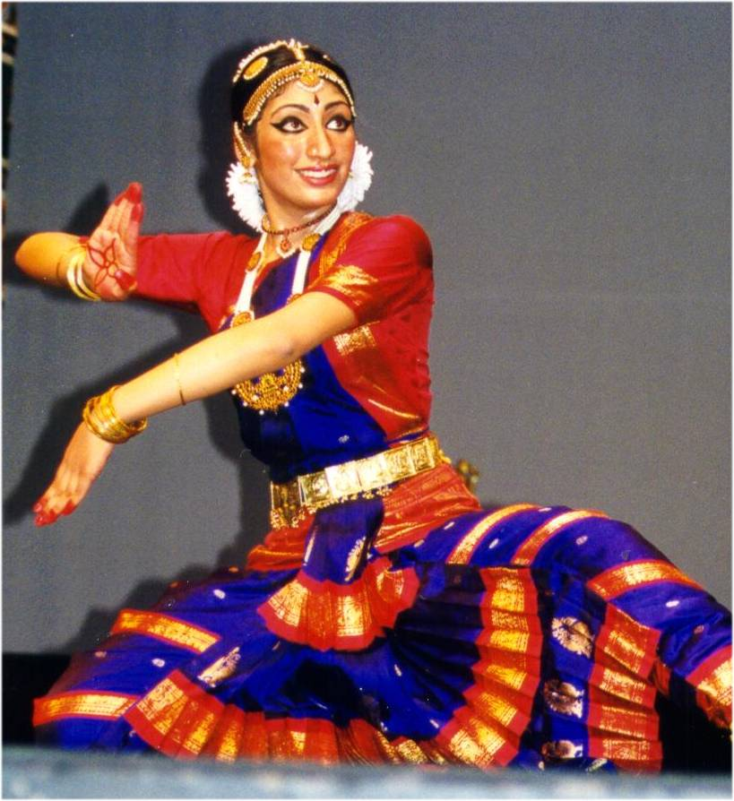

- music -
|
You can use this LISTSERV for contributing information, ideas, and comments related to music technology as well as for seeking help and information on the far-reaching topics which the organization and its members cover. . In addition, another of ATMI's goals is to deliver such information to an audience of nonspecialists who are users of music CAI. Thus, ATMI cultivates the development of music CAI and disseminates information about the evolution and application of technology in music instruction. Feel free to view ATMI's Mission Statement and the organization's Bylaws. |
. Concert diploma from the Musikakademie der Stadt Basel in Switzerland, where he studied under Konrad Ragossnig. Has given first performances of numerous Danish works and participated in first performances of foreign music. , Germany, and by Lars Trier at the Royal Danish Academy of Music in Copenhagen. Has worked as studio and session musician in various genres and participated in many record and CD productions, as well as in concert, film, TV and theatre projects.
|
|
Through the careful cultivation of each mentor and instructor, CCCS has grown to be a well-respected amature choir. CCCS is very active in the local Taiwanese community. In addition to the annual Winter and Spring concerts, we've participated in art and music festivals sponsored by the Republic of China, charity performances sponsored by the Tzu-Chi Foundation for international disaster reliefs and performances at local nursing homes, special events sponsord by the Taiwan Chamber of Commerce and special presidential inauguration celebration for President Chen of ROC in May of 2000. CCCS has also become more involved in the greater Boston community in the recent years. In 1998, Cable Vision Broadcasting filmed a two hour show about CCCS in its "About The Arts" program which received much positive response from its audience. |
|  |
According to Buljan, the staging of Koltes is extremely interesting. . His performances explore modern theatre forms, interlacing classical theatre, movement, music and visual arts. The Slovenian, French and Croatian co-production The Name at the Tip of the Tongue vombines traditional folk tales and psychoanalytical studies. Pylade by Pier Paolo Pasolini is a rhetorical performance based on one of the major works of European dramaturgy. |
A site I really like: http://www.somedancersandmusicians.com/numbers.htm